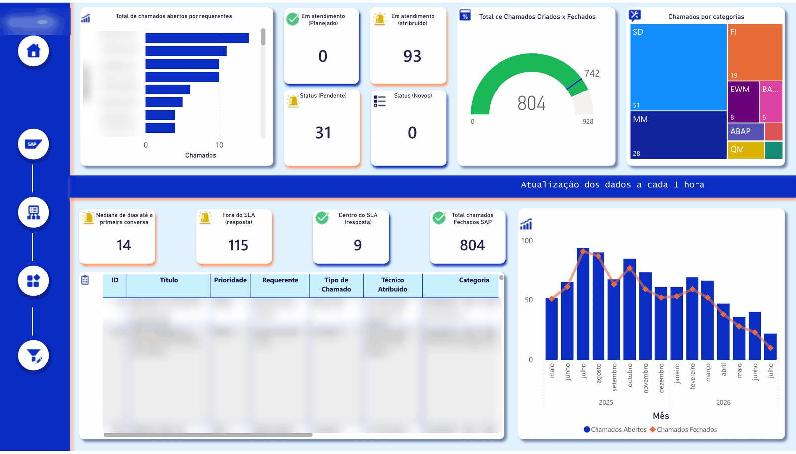
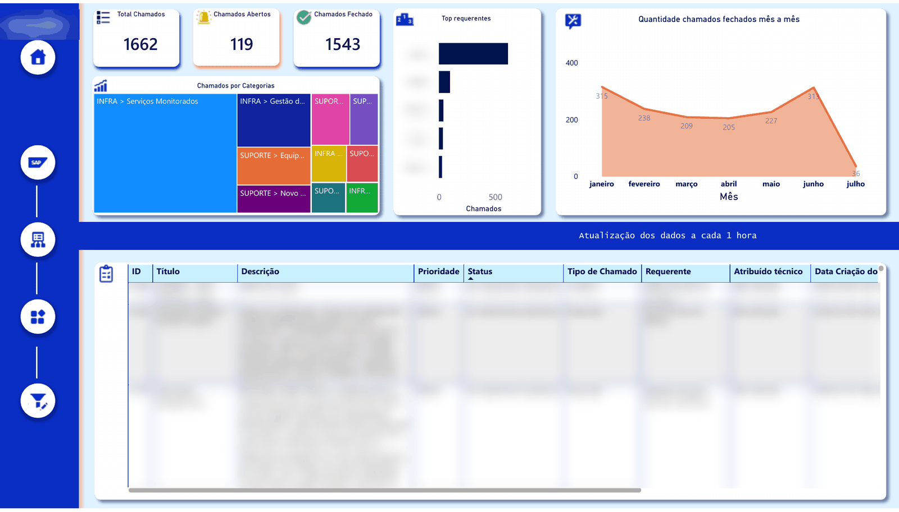

Overview
The IT team handles tickets for end-user support, SAP systems and infrastructure in GLPI. This dashboard reads that data, models it in Power BI and presents three pages: an overview of volume and trend, a page for SAP tickets with SLA compliance and response time, and a page for infrastructure tickets by category and requester. It refreshes every hour, so the team manages the day from the dashboard rather than from GLPI lists.
Context and problem
There was no visibility into IT ticket volume, backlog and SLA across the three areas. Questions such as "how many tickets are open right now", "are we meeting the SLA on SAP tickets" or "which categories generate most infrastructure work" required manual exports from GLPI.
My role
I built the whole report: the Power Query extraction and cleaning from GLPI, the data model and DAX measures, the three pages and their visuals, and the hourly refresh.
Architecture
Report pages
Names, logo and ticket details are blurred in the screenshots. Report labels are in Portuguese.
Overview
Open, closed and total tickets; the month-by-month accumulated trend; the open/closed split; tickets per technician; and a detail table of tickets with priority, status, category and dates.

SAP systems
Open tickets by requester; tickets in progress, pending and new; created vs. closed as a gauge; tickets by SAP module; median days to first response; tickets inside and outside the SLA; and the monthly series of created and closed tickets.

Infrastructure
Total, open and closed tickets; tickets by category as a treemap; top requesters; closed tickets per month; and a detail table.

Technical highlights
One model, three audiences
Tickets are classified by area in Power Query so each page filters the same model instead of maintaining three datasets. Measures such as open, closed, created vs. closed, SLA compliance and median first-response time are written once in DAX and reused across pages.
Hourly refresh
The dataset refreshes every hour, which is enough for the team to manage the day's backlog from the dashboard, and the refresh time is shown on the page.
Side navigation and consistent layout
A fixed side bar switches between pages; cards, charts and the detail table keep the same positions across pages, so the eye knows where to look.
Challenges and how I solved them
Challenge
Three areas with different questions (volume, SLA, categories) in one report.
Solution
One shared model classified by area, one page per area, shared measures.
Challenge
Ticket data needed cleaning before it could be trusted (types, categories, dates).
Solution
All cleaning in Power Query steps, so the refresh repeats it automatically every hour.
Results
- One view of ticket volume, backlog and SLA for the IT team.
- SLA compliance and first-response time on SAP tickets became visible.
- No more manual exports from GLPI to answer routine questions.
Tools
- Power BI
- DAX
- Power Query
- GLPI